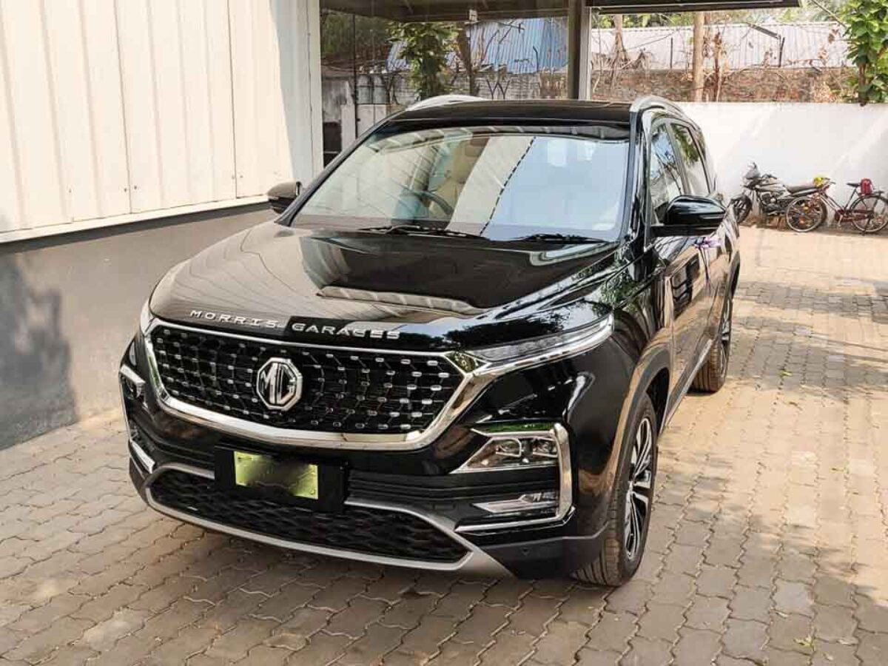

The MG Hector has 1 Diesel Engine and 1 Petrol Engine on offer. The Diesel engine is 1956 cc while the
Petrol engine is 1451 cc . It is available with Manual & Automatic transmission.Depending upon the variant
and fuel type the Hector has a mileage of & Ground clearance of Hector is 192. The Hector is a 5 seater 4
cylinder car and has length of 4655mm, width of 1835mm and a wheelbase of 2750mm.
-Some key specifications:
City mileage: 13.5kmpl
Engine Displacement: (cc)1956
Max Power: (bhp@rpm)167.68bhp@3750rpm
Seating Capacity: 5
Fuel Type: Diesel
Transmission Type: Manual
Boot Space: (Litres)587
Service Cost: (Avg. of 5 years)Rs.6,019
No. of cylinder: 4
Max Torque (nm@rpm): 350Nm@1750-2500rpm
Fuel Tank Capacity: 60.0
Ground Clearance Unladen: 192
Turbo Charged: yes
Drive Type: FWD
For more details you can visit the official website:
